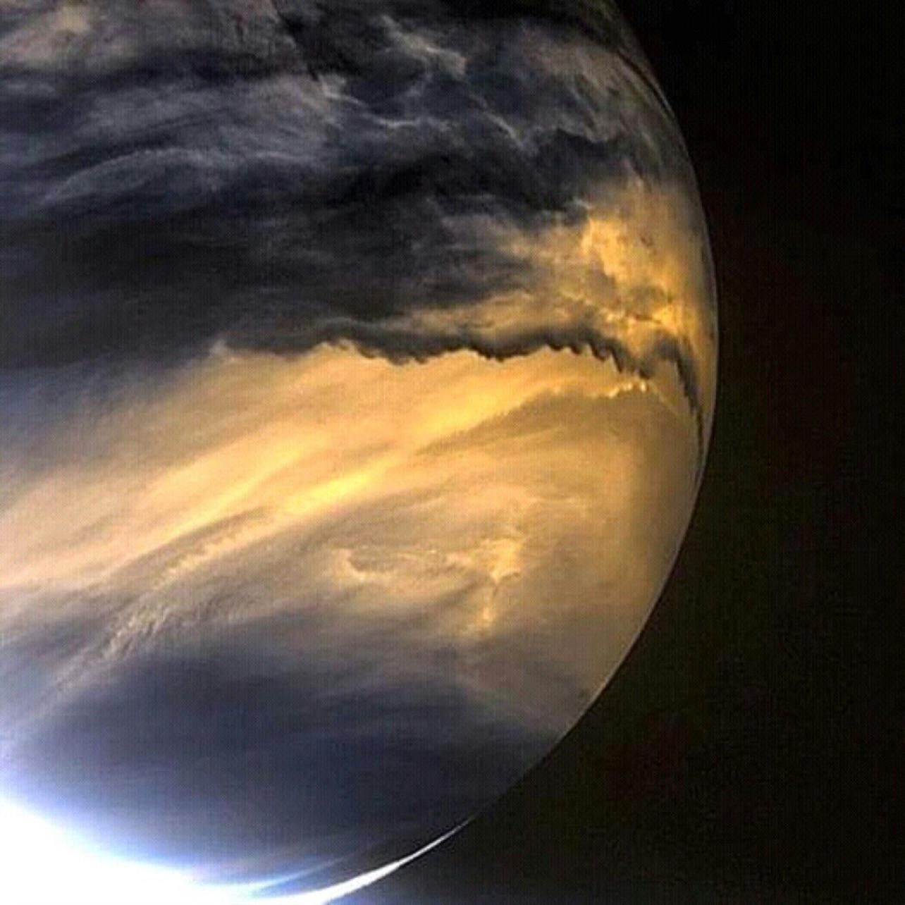
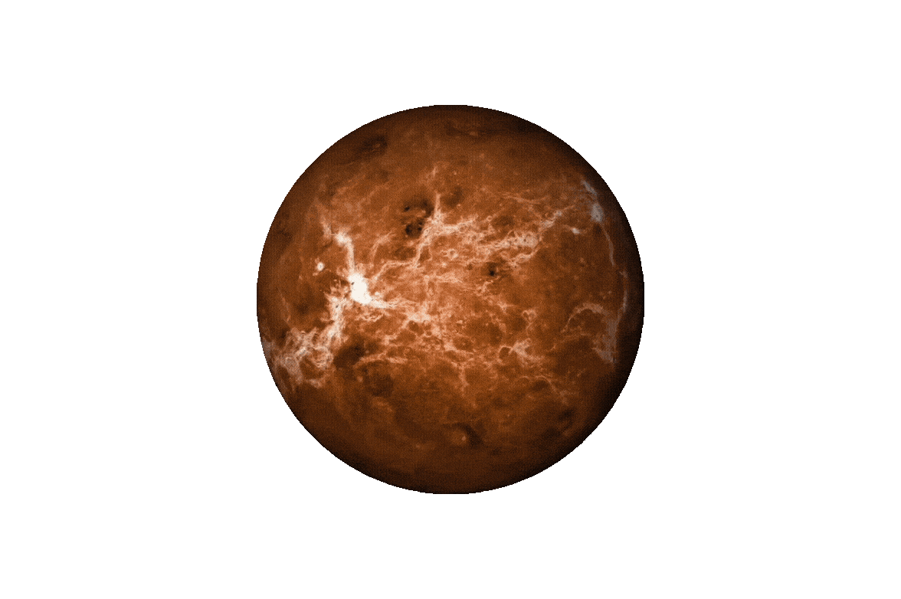

For centuries, Ancient people saw a bright light in the morning, and a bright light at night. They are unsure what it is because the sun is hiding it, they couldn't see it move. Ancient people first thought Venus was a bright, powerful deity or a pair of twin stars. Without telescopes, they could only see its intense brilliance, leading them to attach deep spiritual and mythological meaning to its presence.
Two thousand years later, Galileo pointed a brand-new invention the "Telescope" at this lone wanderer. He didn't just see a dot; he saw a crescent. He watched it wax and wane like a tiny moon. This shape-shifting proved that the planet was actually circling the Sun, not the Earth, and that rewrote our entire map of the universe.
Now, Modern Scientists are currently in a "Venus Renaissance," discovering that our neighbor planet is not a dead rock, but a living world that is still exploding with active volcanoes. By looking back at old radar maps, researchers recently caught Venus in the act, finding fresh lava flows and a massive, 45-kilometer-long underground lava cave. This proves that instead of shifting continents like Earth, Venus reshapes its surface when magma punches through its squishy crust like boiling soup.
As fascinating as it was, humanity continued its course for hunting of knowledge and exploration towards this hot and yellow planet. Sending countless probes to know more and get a better look of what's inside of it. Below are the list of Probes that are sent to the Venusian planet: